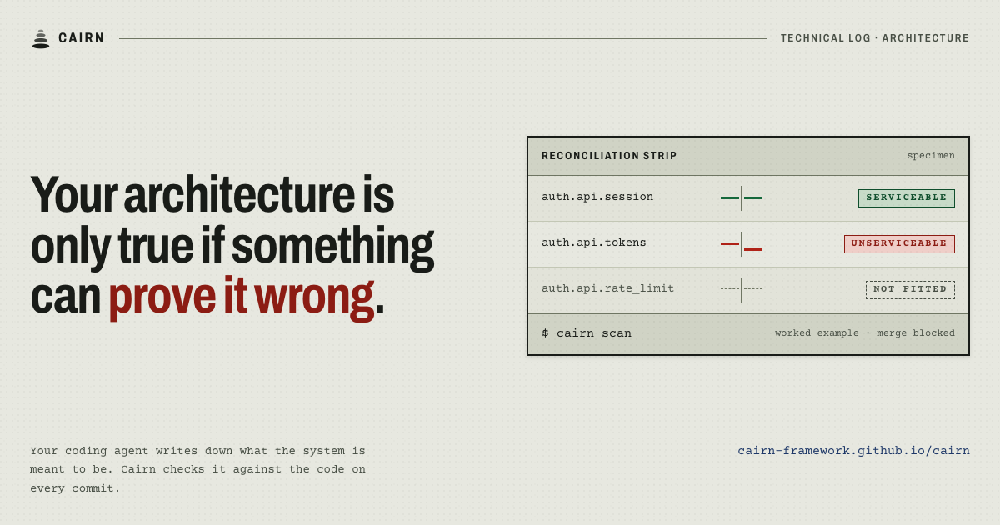

Stone and paper. Weight you can read. The connective tissue between past decisions, present code, and future intent, made visible.
This page is the canonical reference for Cairn's UI. Three files carry everything: fonts.css loads the type, tokens.css defines every color, size, and duration, components.css styles the surfaces. Every component here reads from tokens. No hardcoded hex values downstream.
01 . Color
Color
Warm stone, quiet ink, chain accents tuned to role (not brand). Every value is a token.
Stone surfaces
Bedrock
--stone-0
#0d0c0a
Beneath all
Base
--stone-1
#141310
Page bg
Primary
--stone-2
#1b1915
Content surface
Raised
--stone-3
#22201b
Cards, wells
Elevated
--stone-4
#2a2721
Panels
Peak
--stone-5
#342f27
Popovers, hover
Paper tones
Paper 0
--paper-0
#f3ecdd
Warm paper
Paper 1
--paper-1
#eae0cb
Aged paper
Paper 2
--paper-2
#ddd0b6
Deeper paper
Seams
Faint
--seam-faint
#2a2620
Subtle rule
Thin
--seam-thin
#38332b
Default seam
Clear
--seam-clear
#4a4338
Readable
Carved
--seam-carved
#5a5244
Must be legible
Ink
Char
--ink-char
#f2ece0
Primary
Aged
--ink-aged
#c9c0ae
Secondary
Faded
--ink-faded
#908673
Tertiary
Mist
--ink-mist
#5f5849
Caption
Ghost
--ink-ghost
#3d382f
Placeholder
→ Numeric aliases
--ink-1 .. --ink-4
(aliases)
Legacy shell
Provenance chain (evidence flowing in)
Ember
--prov-1
#f4b36a
Active
Brass
--prov-2
#c4864a
Default
Tarnished
--prov-3
#7d5530
Dim trace
Wash
--prov-wash
rgba(196,134,74,.10)
Surface tint
(preview)
ember @ 40%
—
Ghost trace
(preview)
brass @ 20%
—
Dim trace
Authority chain (rules flowing out)
Verdigris light
--auth-1
#88c4b4
Active
Verdigris
--auth-2
#5a9687
Default
Oxidised deep
--auth-3
#2f5448
Dim trace
Hinge (the decision)
Bone-white
--hinge-1
#e8e1d2
Active
Weathered
--hinge-2
#b6ac96
Default
Wash
--hinge-wash
rgba(232,225,210,.06)
Surface tint
Signal
Drift
--drift
#d47854
Advisory tension
Ember
--ci-ember
#d98a70
Error severity
Block
--block
#b84c38
Blocking contradiction
Settled
--settled
#82a893
Reconciled
Settled wash
--settled-wash
rgba(130,168,147,.10)
Surface tint
02 . Typography
Typography
Source Serif 4 for sentences. IBM Plex Sans for UI. IBM Plex Mono for anything exact.
Stone and paper.
.t-display-s · 88 / 300 / opsz 60
Section headline
.t-h1-s · 56 / 300
Sub-section heading
.t-h2-s · 36 / 400
Panel title
.t-h3-s · 26 / 500
Card title, node name
.t-title-s · 20 / 500
A lede, set in italic for pulled concepts.
.t-lede-s · 16 / 300 italic
Body copy, the default voice of the UI. Enough line-height to read quietly.
.t-body-s · 14 / 400
Small descriptions and meta.
.t-small-s · 12 / 400
cairn.blueprint · ./meta/decisions/two-chain.md
.t-mono-s · 12 / 400 / 0.04em
Kicker label
.t-label-s · 11 / 0.15em caps
03 . Spacing and radius
Spacing and radius
Spacing steps in a readable rhythm. Radii stay low: stone is eroded, not milled.
Spacing scale (--s-1 to --s-10)
--s-1 · 4px
--s-2 · 8px
--s-3 · 12px
--s-4 · 16px
--s-5 · 24px
--s-6 · 32px
--s-7 · 48px
--s-8 · 64px
--s-9 · 96px
--s-10 · 128px
Touch target (--tap-min)
--tap-min · 44px minimum interactive size on tap surfaces (applied at 900px and below)
Channel height (--ui-channel-height)
--ui-channel-height · 200px fixed height of the bottom channel bar; its body scrolls internally
Query search width (--ui-query-search-max-width)
--ui-query-search-max-width · 608px cap on the query rail search input
Radius scale
--r-edge
--r-stone
--r-round
--r-large
--r-full
Shadows
--lift-1
--lift-2
--lift-3
04 . Motion
Motion
Stones settle. They do not bounce. Six durations, four easings, one idle animation (drift).
Durations
--dur-tick 120ms near-instant response
--dur-quick 200ms snappy state change
--dur-settle 320ms default, stone finding its place
--dur-reveal 520ms progressive disclosure
--dur-breathe 2400ms drift node idle (only idle animation)
--dur-build 1800ms map building sequence
The map is clean. All modules reconcile without errors or warnings.
Without CTA.empty-state .empty-state-heading .empty-state-body
22 . Component classes
Component library
Canonical region classes for the webui redesign, with one token style source.
Class inventory
Instrument shell, status bezel, query rail, graph canvas, node module, evidence rail, node depth plate, lineage plate, blueprint plate, channel bar, state legend, and console lane.
.instrument-shell
.status-bezel and .status-next (label, title, rule): the next-recommended row
.query-rail
.graph-canvas
.node-module and .synced / .ghost / .orphaned / .drift variants
.evidence-rail
.node-depth-plate
.lineage-plate
.blueprint-plate
.channel-bar and .channel-title-prose (backlog title) / .pending-collapsed (collapsed ruling summary and tier)
.state-legend
.console-workspace and .console-lane (head, title, source, body): the over-harness console's three-lane read-only composition; lane bodies scroll internally
Cairnsrc/ui_assets (demo)
24Nodes
27Dependencies
Drift1 Error2 Warnings1 Info
Next recommendedRender the evidence the browser already downloadedcairn.ui · Selected as the top open todo
17 Matches
Map
cairn.ui
Web UI surface
2 files, 1 contract, 4 artefacts
cairn.shells
Shell container
Planned in roadmap, no concrete module yet
cairn.runtime
Runtime bridge
Observed in code, missing declaration
cairn.reports
Report generator
Drifted interface hash
Node evidence
Node
id
cairn.ui
state
synced
path
src/ui_assets
files
28
In
cairn.kernel
cairn.cli
Lineage
Evidence
map fixture
Hinge
dec.webui-write-authority
2026-07-28
Authority
dec.webui-design-token-gate
Blueprint
name: cairn.ui
status: synced
state: stable
Findings 6Drift 1Changes 2Backlog 3
CAIRN_RECONCILE_ORPHANED_FILE
ErrorOrphaned file
File path not reconciled with any declared node.
node-paths.md
agent-context-bundle · Synced
Reconcile this file in module metadata.
Render the evidence the browser already downloadedtodo.console-wire-legibilityopen
dec.bootstrap-fixture-corpus-split3d old · unratified
The bootstrap test fixture keeps two kinds of files apart: rule files that cairn loads and checks, and evidence files cited in prose.
Tier: local. It touches one test area and replaces nothing.
State legend
Synced calm and reconciled
Ghost declared but absent
Orphaned observed but undeclared
Drift requires attention
23 . Marketing lane
Marketing lane
The airworthiness record: the paperwork that makes an aircraft legal to fly. This is the second lane of the same design system, used by docs/index.html and every outward page. It shares the --s-*, --r-*, --line-*, and --tap-min primitives with the product lane, and adds its own colour, type, motion, and components under the --mk-* and .mk-* prefixes. Motion is lane-local: the lane owns --mk-dur-*. Authority: dec.marketing-visual-world.
Why this world
An aircraft is airworthy because a record asserts that every fitted part matches the type certificate, and because every deviation has been raised, classified, and signed for by a named person. Cairn makes the same assertion about a codebase, so the record's grammar is Cairn's grammar.
synced is a green serviceable tag, signed.
A structural error or an interface contradiction is a red unserviceable tag. Both block; they differ in what they block.
A rationale tension is an amber deferred defect. Raised and tracked, never grounding.
ghost is a part that was never fitted; orphaned is a part fitted with nobody's signature against it.
Drift is a torque stripe: a paint mark across a bolt and its housing whose halves have stopped lining up.
Two inks are load-bearing. --mk-ink-print is pre-printed form ink and states what was declared. --mk-ink-pen is ballpoint and states what was found. Dark is reserved for instrument insets, which is where command output and blueprint source live.
Type
architecture reconciliation controller
Serial
v0.10.0
Reconciliation stripspecimen entry
DeclaredCheckFound on disk
auth.api.sessionServiceable
auth.api.tokensUnserviceable
auth.api.rate_limitNot fitted
no entryUnlogged
Unserviceable
Interface contradiction
The contract says one thing and the code does another.
Stops the commit, until you settle it
Deferred defect
Rationale tension
Nothing mechanical is broken, but the story behind the code has drifted.
Stops nothing, stays on the record
Structure diagramspecimen entry
mcpbrownfieldreconcile
kernel8 nodes inside · 5 connect to it
uistate
Shape only. Pair a real instance with the record that gives each edge its direction and reason.
E-01Progressive disclosure is the page structure.
Every block reads complete at its summary line and opens to the raw record. Native details, so the page is whole with scripting off.Record
.mk-card is the Open Graph frame, fixed at --mk-card-w by --mk-card-h and rendered once to a PNG. It is built from the lane, never from a product screenshot. Source: docs/assets/social-card.html. Regeneration instructions live in the README.

Open Graph card.mk-card .mk-card-top .mk-card-body .mk-card-foot
24 . Glossary
Glossary
Load-bearing vocabulary. Never paraphrase these in UI.
blueprint.blueprint
The declarative file describing what your system should be. Authored by hand; the single source of intent.
mapmap.md
The reconciled view of your system. Cairn produces it by comparing the blueprint to actual code and surfacing findings.
provenance chainadvisory
Evidence flowing in: source → research → decision. Informs; never binds.
authority chainenforced
Rules flowing out: decision → blueprint → contract → code. Binds at every gate.
hingespec §3.4
The decision. Obligations in both directions; where provenance meets authority.
interface hashidentity
A stable fingerprint of a contract's shape. When it moves, the map moves with it.
rationale tensionadvisory
A non-blocking finding. Something the provenance chain wants to flag. Never fails a gate.
interface contradictionblocking
A blocking finding. The authority chain disagrees with itself; commits are gated until resolved.
ghoststate
Declared in the blueprint but not yet reconciled to code. Drawn dashed, with hatched fill.
plannedstate
Declared in the blueprint, path not yet built. A healthy forward-looking state. Drawn solid and calm in a slate blueprint-blue, never as drift.
syncedstate
Declared and reconciled. The default, quiet state.
orphanedstate
Present in code but not in the blueprint. A module without a declaration.
driftstate, advisory
Code diverged from its declaration. The only node that breathes.
neighbourhoodquery primitive
The N-hop graph around a node. "Show neighbourhood" never becomes "show nearby".
reconcilerinterface
The pluggable thing that compares a blueprint against a reality layer. Code is the first reconciler; others follow.
artefactkernel primitive
A typed schema object: contract, decision, todo, research, review, source. Umbrella kept; direct types are the six.